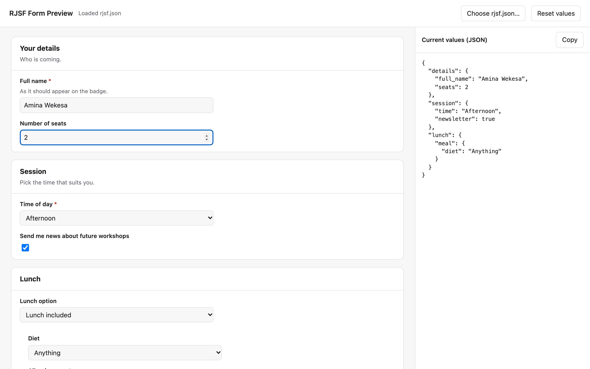
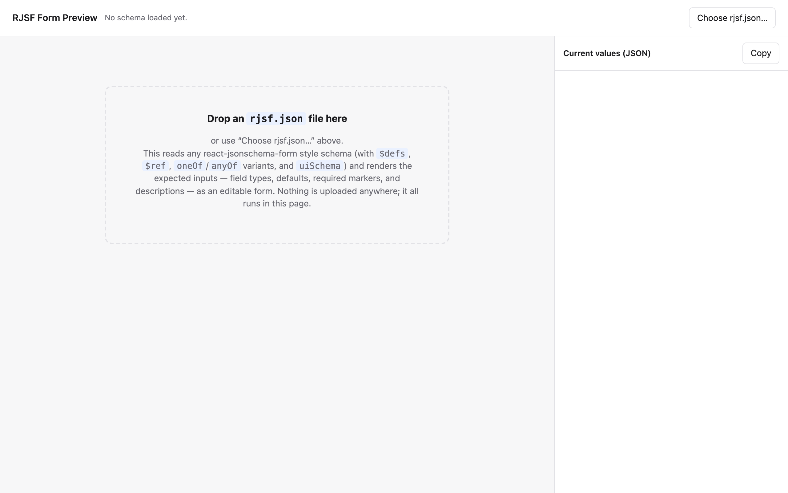
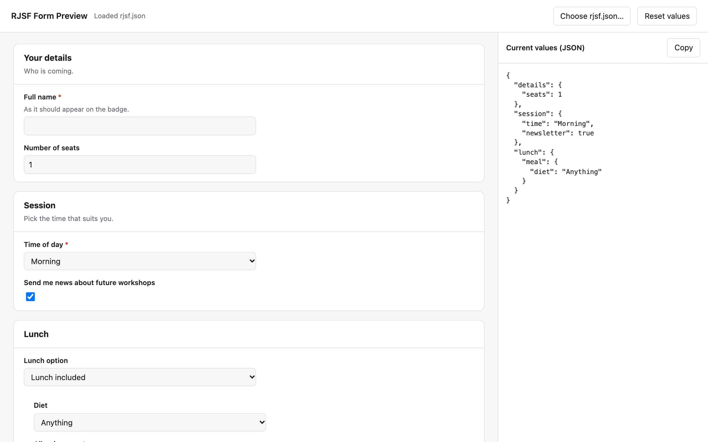

At a glance
See it straight away
Drop in a file and the form appears, with its labels, help text, defaults and required marks.
Nothing to install
It is one web page. Open it in any browser and start.
Your file stays with you
The form definition is read inside the page and is not uploaded anywhere.
A walk through RJSF Form Preview
Here it is with a small workshop registration form, from an empty page to checked values.
-
Open the page
The page starts empty and tells you what it expects: an
rjsf.jsonfile, the kind used by react-jsonschema-form. Each top-level entry in the file becomes one section of the form.
-
Drop in your form definition
Drag the file onto the page, or use Choose rjsf.json… at the top. The form is drawn at once, one card per section. Text boxes, number boxes, drop-down lists and tick boxes are chosen from the field types in your file, and the defaults are already filled in.

Required fields carry a red star, and help text sits under the label. -
Fill it in and watch the values
Type into the form as a user would. The panel on the right shows the values the form would send, updated with every change. Choices that swap part of the form, such as picking “Lunch included”, show their extra fields straight away.
-
Copy the values, or start again
Copy puts the values on your clipboard, ready to paste into a test or a bug report. Reset values returns every field to its default so you can try another path through the form.
Get RJSF Form Preview
It runs in any modern browser on any computer. There is nothing to download.
- Open the tool with the button below.
- Drop your
rjsf.jsonfile onto the page. - To use it offline, save the single
index.htmlfile from the source code and open it from your computer.